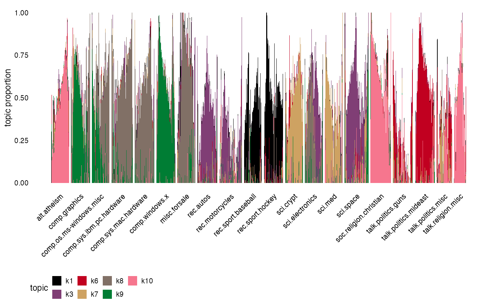

Create a “Structure plot” from a multinomial topic model fit or other model with “loadings” or “weights”. The Structure plot represents the estimated topic proportions of each sample in a stacked bar chart, with bars of different colors representing different topics. Consequently, samples that have similar topic proportions have similar amounts of each color.
structure_plot(
fit,
topics,
grouping,
loadings_order = "embed",
n = 2000,
colors,
gap = 1,
embed_method = structure_plot_default_embed_method,
ggplot_call = structure_plot_ggplot_call,
...
)
structure_plot_default_embed_method(fit, ...)
# S3 method for class 'poisson_nmf_fit'
plot(x, ...)
# S3 method for class 'multinom_topic_model_fit'
plot(x, ...)
structure_plot_ggplot_call(
dat,
colors,
ticks = NULL,
font.size = 9,
linewidth = 0
)An object of class “poisson_nmf_fit” or
“multinom_topic_model_fit”, or an n x k matrix of topic
proportions, where k is the number of topics. (The elements in each
row of this matrix should sum to 1.) If a Poisson NMF fit is
provided as input, the corresponding multinomial topic model fit is
automatically recovered using poisson2multinom.
Top-to-bottom ordering of the topics in the Structure
plot; topics[1] is shown on the top, topics[2] is
shown next, and so on. If the ordering of the topics is not
specified, the topics are automatically ordered so that the topics
with the greatest total “mass” are at shown at the bottom of
the plot. The topics may be specified by number or by name. Note
that not all of the topics need to be included, so one may also use
this argument to plot a subset of the topics.
Optional categorical variable (a factor) with one
entry for each row of the loadings matrix fit$L defining a
grouping of the samples (rows). The samples (rows) are arranged
along the horizontal axis according to this grouping, then within
each group according to loadings_order. If
grouping is not a factor, an attempt is made to convert it
to a factor using as.factor. Note that if
loadings_order is specified manually, grouping should
be the groups for the rows of fit$L before reordering.
Ordering of the rows of the loadings matrix
fit$L along the horizontal axis the Structure plot (after
they have been grouped). If loadings_order = "embed", the
ordering is generated automatically from a 1-d embedding,
separately for each group. The rows may be specified by number or
by name. Note that loadings_order may include all the rows
of fit$L, or a subset.
The maximum number of samples (rows of the loadings matrix
fit$L) to include in the plot. Typically there is little to
no benefit in including large number of samples in the Structure
plot due to screen resolution limits. Ignored if
loadings_order is provided.
Colors used to draw topics in Structure plot.
The horizontal spacing between groups. Ignored if
grouping is not provided.
The function used to compute an 1-d embedding
from a loadings matrix fit$L; only used if
loadings_order = "embed". The function must accept the
multinomial topic model fit as its first input (“fit”) and
additional arguments may be passed (...). The output should be a
named numeric vector with one entry per row of fit$L, and
the names of the entries should be the same as the row names of
fit$L.
The function used to create the plot. Replace
structure_plot_ggplot_call with your own function to
customize the appearance of the plot.
Additional arguments passed to structure_plot
(for the plot method) or embed_method (for
function structure_plot).
An object of class “poisson_nmf_fit” or
“multinom_topic_model_fit”. If a Poisson NMF fit is provided
as input, the corresponding multinomial topic model fit is
automatically recovered using poisson2multinom.
A data frame passed as input to
ggplot, containing, at a minimum, columns
“sample”, “topic” and “prop”: the
“sample” column contains the positions of the samples (rows
of the L matrix) along the horizontal axis; the “topic”
column is a topic (a column of L); and the “prop” column is
the topic proportion for the respective sample.
The placement of the group labels along the horizontal
axis, and their names. For data that are not grouped, use
ticks = NULL.
Font size used in plot.
Passed as the “linewidth” argument to
geom_col.
A ggplot object.
The name “Structure plot” comes from its widespread use in population genetics to visualize the results of the Structure software (Rosenberg et al, 2002).
For most uses of the Structure plot in population genetics, there is usually some grouping of the samples (e.g., assignment to pre-defined populations) that guides arrangement of the samples along the horizontal axis in the bar chart. In other applications, such as analysis of gene expression data, a pre-defined grouping may not always be available. Therefore, a “smart” arrangement of the samples is, by default, generated automatically by performing a 1-d embedding of the samples.
Dey, K. K., Hsiao, C. J. and Stephens, M. (2017). Visualizing the structure of RNA-seq expression data using grade of membership models. PLoS Genetics 13, e1006599.
Rosenberg, N. A., Pritchard, J. K., Weber, J. L., Cann, H. M., Kidd, K. K., Zhivotovsky, L. A. and Feldman, M. W. (2002). Genetic structure of human populations. Science 298, 2381–2385.
# Create a Structure plot to visualize topic modeling results
# from the 20 Newsgroups.
set.seed(1)
data(newsgroups)
structure_plot(newsgroups$L,grouping = newsgroups$topics,
topics = paste0("k",c(1,3,6:10)),gap = 10)
#> Running tsne on 94 x 10 matrix.
#> Read the 94 x 10 data matrix successfully!
#> Using no_dims = 1, perplexity = 30.000000, and theta = 0.100000
#> Computing input similarities...
#> Building tree...
#> Done in 0.00 seconds (sparsity = 0.987325)!
#> Learning embedding...
#> Iteration 50: error is 49.731144 (50 iterations in 0.00 seconds)
#> Iteration 100: error is 51.957363 (50 iterations in 0.00 seconds)
#> Iteration 150: error is 50.838744 (50 iterations in 0.00 seconds)
#> Iteration 200: error is 48.876950 (50 iterations in 0.00 seconds)
#> Iteration 250: error is 47.835961 (50 iterations in 0.00 seconds)
#> Iteration 300: error is 1.836915 (50 iterations in 0.00 seconds)
#> Iteration 350: error is 0.459479 (50 iterations in 0.00 seconds)
#> Iteration 400: error is 0.451588 (50 iterations in 0.00 seconds)
#> Iteration 450: error is 0.451292 (50 iterations in 0.00 seconds)
#> Iteration 500: error is 0.451294 (50 iterations in 0.00 seconds)
#> Iteration 550: error is 0.451294 (50 iterations in 0.00 seconds)
#> Iteration 600: error is 0.451294 (50 iterations in 0.00 seconds)
#> Iteration 650: error is 0.451294 (50 iterations in 0.00 seconds)
#> Iteration 700: error is 0.451294 (50 iterations in 0.00 seconds)
#> Iteration 750: error is 0.451294 (50 iterations in 0.00 seconds)
#> Iteration 800: error is 0.451295 (50 iterations in 0.00 seconds)
#> Iteration 850: error is 0.451295 (50 iterations in 0.00 seconds)
#> Iteration 900: error is 0.451295 (50 iterations in 0.00 seconds)
#> Iteration 950: error is 0.451295 (50 iterations in 0.00 seconds)
#> Iteration 1000: error is 0.451294 (50 iterations in 0.00 seconds)
#> Fitting performed in 0.05 seconds.
#> Running tsne on 101 x 10 matrix.
#> Read the 101 x 10 data matrix successfully!
#> Using no_dims = 1, perplexity = 32.000000, and theta = 0.100000
#> Computing input similarities...
#> Building tree...
#> Done in 0.00 seconds (sparsity = 0.986766)!
#> Learning embedding...
#> Iteration 50: error is 49.699568 (50 iterations in 0.00 seconds)
#> Iteration 100: error is 51.884843 (50 iterations in 0.00 seconds)
#> Iteration 150: error is 51.584747 (50 iterations in 0.00 seconds)
#> Iteration 200: error is 51.168049 (50 iterations in 0.00 seconds)
#> Iteration 250: error is 51.479292 (50 iterations in 0.00 seconds)
#> Iteration 300: error is 1.311332 (50 iterations in 0.00 seconds)
#> Iteration 350: error is 0.768489 (50 iterations in 0.00 seconds)
#> Iteration 400: error is 0.766447 (50 iterations in 0.00 seconds)
#> Iteration 450: error is 0.766443 (50 iterations in 0.00 seconds)
#> Iteration 500: error is 0.766443 (50 iterations in 0.00 seconds)
#> Iteration 550: error is 0.766443 (50 iterations in 0.00 seconds)
#> Iteration 600: error is 0.766443 (50 iterations in 0.00 seconds)
#> Iteration 650: error is 0.766444 (50 iterations in 0.00 seconds)
#> Iteration 700: error is 0.766443 (50 iterations in 0.00 seconds)
#> Iteration 750: error is 0.766443 (50 iterations in 0.00 seconds)
#> Iteration 800: error is 0.766443 (50 iterations in 0.00 seconds)
#> Iteration 850: error is 0.766443 (50 iterations in 0.00 seconds)
#> Iteration 900: error is 0.766443 (50 iterations in 0.00 seconds)
#> Iteration 950: error is 0.766443 (50 iterations in 0.00 seconds)
#> Iteration 1000: error is 0.766443 (50 iterations in 0.00 seconds)
#> Fitting performed in 0.05 seconds.
#> Running tsne on 93 x 10 matrix.
#> Read the 93 x 10 data matrix successfully!
#> Using no_dims = 1, perplexity = 29.000000, and theta = 0.100000
#> Computing input similarities...
#> Building tree...
#> Done in 0.00 seconds (sparsity = 0.982773)!
#> Learning embedding...
#> Iteration 50: error is 51.358205 (50 iterations in 0.00 seconds)
#> Iteration 100: error is 53.505166 (50 iterations in 0.00 seconds)
#> Iteration 150: error is 51.871767 (50 iterations in 0.00 seconds)
#> Iteration 200: error is 51.253984 (50 iterations in 0.00 seconds)
#> Iteration 250: error is 51.120021 (50 iterations in 0.00 seconds)
#> Iteration 300: error is 1.510866 (50 iterations in 0.00 seconds)
#> Iteration 350: error is 0.410867 (50 iterations in 0.00 seconds)
#> Iteration 400: error is 0.402480 (50 iterations in 0.00 seconds)
#> Iteration 450: error is 0.402463 (50 iterations in 0.00 seconds)
#> Iteration 500: error is 0.402462 (50 iterations in 0.00 seconds)
#> Iteration 550: error is 0.402462 (50 iterations in 0.00 seconds)
#> Iteration 600: error is 0.402463 (50 iterations in 0.00 seconds)
#> Iteration 650: error is 0.402462 (50 iterations in 0.00 seconds)
#> Iteration 700: error is 0.402462 (50 iterations in 0.00 seconds)
#> Iteration 750: error is 0.402462 (50 iterations in 0.00 seconds)
#> Iteration 800: error is 0.402462 (50 iterations in 0.00 seconds)
#> Iteration 850: error is 0.402462 (50 iterations in 0.00 seconds)
#> Iteration 900: error is 0.402462 (50 iterations in 0.00 seconds)
#> Iteration 950: error is 0.402462 (50 iterations in 0.00 seconds)
#> Iteration 1000: error is 0.402462 (50 iterations in 0.00 seconds)
#> Fitting performed in 0.05 seconds.
#> Running tsne on 113 x 10 matrix.
#> Read the 113 x 10 data matrix successfully!
#> Using no_dims = 1, perplexity = 36.000000, and theta = 0.100000
#> Computing input similarities...
#> Building tree...
#> Done in 0.00 seconds (sparsity = 0.988801)!
#> Learning embedding...
#> Iteration 50: error is 46.688767 (50 iterations in 0.00 seconds)
#> Iteration 100: error is 49.295518 (50 iterations in 0.00 seconds)
#> Iteration 150: error is 49.421589 (50 iterations in 0.00 seconds)
#> Iteration 200: error is 51.497931 (50 iterations in 0.00 seconds)
#> Iteration 250: error is 49.810827 (50 iterations in 0.00 seconds)
#> Iteration 300: error is 1.872061 (50 iterations in 0.00 seconds)
#> Iteration 350: error is 0.813669 (50 iterations in 0.00 seconds)
#> Iteration 400: error is 0.697188 (50 iterations in 0.00 seconds)
#> Iteration 450: error is 0.692728 (50 iterations in 0.00 seconds)
#> Iteration 500: error is 0.692729 (50 iterations in 0.00 seconds)
#> Iteration 550: error is 0.692729 (50 iterations in 0.00 seconds)
#> Iteration 600: error is 0.692729 (50 iterations in 0.00 seconds)
#> Iteration 650: error is 0.692729 (50 iterations in 0.00 seconds)
#> Iteration 700: error is 0.692729 (50 iterations in 0.00 seconds)
#> Iteration 750: error is 0.692729 (50 iterations in 0.00 seconds)
#> Iteration 800: error is 0.692729 (50 iterations in 0.00 seconds)
#> Iteration 850: error is 0.692729 (50 iterations in 0.00 seconds)
#> Iteration 900: error is 0.692729 (50 iterations in 0.00 seconds)
#> Iteration 950: error is 0.692729 (50 iterations in 0.00 seconds)
#> Iteration 1000: error is 0.692729 (50 iterations in 0.00 seconds)
#> Fitting performed in 0.06 seconds.
#> Running tsne on 103 x 10 matrix.
#> Read the 103 x 10 data matrix successfully!
#> Using no_dims = 1, perplexity = 33.000000, and theta = 0.100000
#> Computing input similarities...
#> Building tree...
#> Done in 0.00 seconds (sparsity = 0.988595)!
#> Learning embedding...
#> Iteration 50: error is 46.671045 (50 iterations in 0.00 seconds)
#> Iteration 100: error is 48.342735 (50 iterations in 0.00 seconds)
#> Iteration 150: error is 49.846792 (50 iterations in 0.00 seconds)
#> Iteration 200: error is 46.558165 (50 iterations in 0.00 seconds)
#> Iteration 250: error is 50.310240 (50 iterations in 0.00 seconds)
#> Iteration 300: error is 1.602756 (50 iterations in 0.00 seconds)
#> Iteration 350: error is 0.847178 (50 iterations in 0.00 seconds)
#> Iteration 400: error is 0.729929 (50 iterations in 0.00 seconds)
#> Iteration 450: error is 0.729786 (50 iterations in 0.00 seconds)
#> Iteration 500: error is 0.729786 (50 iterations in 0.00 seconds)
#> Iteration 550: error is 0.729786 (50 iterations in 0.00 seconds)
#> Iteration 600: error is 0.729787 (50 iterations in 0.00 seconds)
#> Iteration 650: error is 0.729786 (50 iterations in 0.00 seconds)
#> Iteration 700: error is 0.729787 (50 iterations in 0.00 seconds)
#> Iteration 750: error is 0.729786 (50 iterations in 0.00 seconds)
#> Iteration 800: error is 0.729787 (50 iterations in 0.00 seconds)
#> Iteration 850: error is 0.729787 (50 iterations in 0.00 seconds)
#> Iteration 900: error is 0.729786 (50 iterations in 0.00 seconds)
#> Iteration 950: error is 0.729786 (50 iterations in 0.00 seconds)
#> Iteration 1000: error is 0.729786 (50 iterations in 0.00 seconds)
#> Fitting performed in 0.05 seconds.
#> Running tsne on 101 x 10 matrix.
#> Read the 101 x 10 data matrix successfully!
#> Using no_dims = 1, perplexity = 32.000000, and theta = 0.100000
#> Computing input similarities...
#> Building tree...
#> Done in 0.00 seconds (sparsity = 0.987648)!
#> Learning embedding...
#> Iteration 50: error is 50.644578 (50 iterations in 0.00 seconds)
#> Iteration 100: error is 49.335730 (50 iterations in 0.00 seconds)
#> Iteration 150: error is 50.783617 (50 iterations in 0.00 seconds)
#> Iteration 200: error is 50.630892 (50 iterations in 0.00 seconds)
#> Iteration 250: error is 47.036045 (50 iterations in 0.00 seconds)
#> Iteration 300: error is 1.479107 (50 iterations in 0.00 seconds)
#> Iteration 350: error is 0.708636 (50 iterations in 0.00 seconds)
#> Iteration 400: error is 0.704212 (50 iterations in 0.00 seconds)
#> Iteration 450: error is 0.704211 (50 iterations in 0.00 seconds)
#> Iteration 500: error is 0.704214 (50 iterations in 0.00 seconds)
#> Iteration 550: error is 0.704213 (50 iterations in 0.00 seconds)
#> Iteration 600: error is 0.704212 (50 iterations in 0.00 seconds)
#> Iteration 650: error is 0.704213 (50 iterations in 0.00 seconds)
#> Iteration 700: error is 0.704213 (50 iterations in 0.00 seconds)
#> Iteration 750: error is 0.704212 (50 iterations in 0.00 seconds)
#> Iteration 800: error is 0.704214 (50 iterations in 0.00 seconds)
#> Iteration 850: error is 0.704213 (50 iterations in 0.00 seconds)
#> Iteration 900: error is 0.704212 (50 iterations in 0.00 seconds)
#> Iteration 950: error is 0.704213 (50 iterations in 0.00 seconds)
#> Iteration 1000: error is 0.704215 (50 iterations in 0.00 seconds)
#> Fitting performed in 0.05 seconds.
#> Running tsne on 96 x 10 matrix.
#> Read the 96 x 10 data matrix successfully!
#> Using no_dims = 1, perplexity = 30.000000, and theta = 0.100000
#> Computing input similarities...
#> Building tree...
#> Done in 0.00 seconds (sparsity = 0.984375)!
#> Learning embedding...
#> Iteration 50: error is 49.286750 (50 iterations in 0.00 seconds)
#> Iteration 100: error is 52.255978 (50 iterations in 0.00 seconds)
#> Iteration 150: error is 48.997785 (50 iterations in 0.00 seconds)
#> Iteration 200: error is 49.459623 (50 iterations in 0.00 seconds)
#> Iteration 250: error is 51.266994 (50 iterations in 0.00 seconds)
#> Iteration 300: error is 1.717252 (50 iterations in 0.00 seconds)
#> Iteration 350: error is 0.714865 (50 iterations in 0.00 seconds)
#> Iteration 400: error is 0.583441 (50 iterations in 0.00 seconds)
#> Iteration 450: error is 0.583173 (50 iterations in 0.00 seconds)
#> Iteration 500: error is 0.583173 (50 iterations in 0.00 seconds)
#> Iteration 550: error is 0.583173 (50 iterations in 0.00 seconds)
#> Iteration 600: error is 0.583173 (50 iterations in 0.00 seconds)
#> Iteration 650: error is 0.583173 (50 iterations in 0.00 seconds)
#> Iteration 700: error is 0.583173 (50 iterations in 0.00 seconds)
#> Iteration 750: error is 0.583173 (50 iterations in 0.00 seconds)
#> Iteration 800: error is 0.583173 (50 iterations in 0.00 seconds)
#> Iteration 850: error is 0.583173 (50 iterations in 0.00 seconds)
#> Iteration 900: error is 0.583173 (50 iterations in 0.00 seconds)
#> Iteration 950: error is 0.583173 (50 iterations in 0.00 seconds)
#> Iteration 1000: error is 0.583173 (50 iterations in 0.00 seconds)
#> Fitting performed in 0.05 seconds.
#> Running tsne on 107 x 10 matrix.
#> Read the 107 x 10 data matrix successfully!
#> Using no_dims = 1, perplexity = 34.000000, and theta = 0.100000
#> Computing input similarities...
#> Building tree...
#> Done in 0.00 seconds (sparsity = 0.986462)!
#> Learning embedding...
#> Iteration 50: error is 49.771912 (50 iterations in 0.00 seconds)
#> Iteration 100: error is 46.849522 (50 iterations in 0.00 seconds)
#> Iteration 150: error is 50.907455 (50 iterations in 0.00 seconds)
#> Iteration 200: error is 52.984677 (50 iterations in 0.00 seconds)
#> Iteration 250: error is 50.755027 (50 iterations in 0.00 seconds)
#> Iteration 300: error is 0.952630 (50 iterations in 0.00 seconds)
#> Iteration 350: error is 0.514163 (50 iterations in 0.00 seconds)
#> Iteration 400: error is 0.513583 (50 iterations in 0.00 seconds)
#> Iteration 450: error is 0.513581 (50 iterations in 0.00 seconds)
#> Iteration 500: error is 0.513581 (50 iterations in 0.00 seconds)
#> Iteration 550: error is 0.513582 (50 iterations in 0.00 seconds)
#> Iteration 600: error is 0.513581 (50 iterations in 0.00 seconds)
#> Iteration 650: error is 0.513581 (50 iterations in 0.00 seconds)
#> Iteration 700: error is 0.513580 (50 iterations in 0.00 seconds)
#> Iteration 750: error is 0.513580 (50 iterations in 0.00 seconds)
#> Iteration 800: error is 0.513582 (50 iterations in 0.00 seconds)
#> Iteration 850: error is 0.513580 (50 iterations in 0.00 seconds)
#> Iteration 900: error is 0.513580 (50 iterations in 0.00 seconds)
#> Iteration 950: error is 0.513580 (50 iterations in 0.00 seconds)
#> Iteration 1000: error is 0.513581 (50 iterations in 0.00 seconds)
#> Fitting performed in 0.06 seconds.
#> Running tsne on 120 x 10 matrix.
#> Read the 120 x 10 data matrix successfully!
#> Using no_dims = 1, perplexity = 38.000000, and theta = 0.100000
#> Computing input similarities...
#> Building tree...
#> Done in 0.00 seconds (sparsity = 0.987222)!
#> Learning embedding...
#> Iteration 50: error is 48.517891 (50 iterations in 0.01 seconds)
#> Iteration 100: error is 47.644823 (50 iterations in 0.01 seconds)
#> Iteration 150: error is 47.789894 (50 iterations in 0.01 seconds)
#> Iteration 200: error is 51.051077 (50 iterations in 0.00 seconds)
#> Iteration 250: error is 48.843410 (50 iterations in 0.01 seconds)
#> Iteration 300: error is 0.828023 (50 iterations in 0.00 seconds)
#> Iteration 350: error is 0.640246 (50 iterations in 0.00 seconds)
#> Iteration 400: error is 0.640223 (50 iterations in 0.00 seconds)
#> Iteration 450: error is 0.640224 (50 iterations in 0.00 seconds)
#> Iteration 500: error is 0.640224 (50 iterations in 0.00 seconds)
#> Iteration 550: error is 0.640224 (50 iterations in 0.00 seconds)
#> Iteration 600: error is 0.640224 (50 iterations in 0.00 seconds)
#> Iteration 650: error is 0.640224 (50 iterations in 0.00 seconds)
#> Iteration 700: error is 0.640224 (50 iterations in 0.00 seconds)
#> Iteration 750: error is 0.640224 (50 iterations in 0.00 seconds)
#> Iteration 800: error is 0.640224 (50 iterations in 0.00 seconds)
#> Iteration 850: error is 0.640224 (50 iterations in 0.00 seconds)
#> Iteration 900: error is 0.640224 (50 iterations in 0.00 seconds)
#> Iteration 950: error is 0.640224 (50 iterations in 0.00 seconds)
#> Iteration 1000: error is 0.640224 (50 iterations in 0.00 seconds)
#> Fitting performed in 0.08 seconds.
#> Running tsne on 94 x 10 matrix.
#> Read the 94 x 10 data matrix successfully!
#> Using no_dims = 1, perplexity = 30.000000, and theta = 0.100000
#> Computing input similarities...
#> Building tree...
#> Done in 0.00 seconds (sparsity = 0.986646)!
#> Learning embedding...
#> Iteration 50: error is 52.219513 (50 iterations in 0.00 seconds)
#> Iteration 100: error is 53.791380 (50 iterations in 0.00 seconds)
#> Iteration 150: error is 52.291531 (50 iterations in 0.00 seconds)
#> Iteration 200: error is 51.358277 (50 iterations in 0.00 seconds)
#> Iteration 250: error is 49.745304 (50 iterations in 0.00 seconds)
#> Iteration 300: error is 1.478185 (50 iterations in 0.00 seconds)
#> Iteration 350: error is 0.851076 (50 iterations in 0.00 seconds)
#> Iteration 400: error is 0.847321 (50 iterations in 0.00 seconds)
#> Iteration 450: error is 0.847318 (50 iterations in 0.00 seconds)
#> Iteration 500: error is 0.847318 (50 iterations in 0.00 seconds)
#> Iteration 550: error is 0.847316 (50 iterations in 0.00 seconds)
#> Iteration 600: error is 0.847316 (50 iterations in 0.00 seconds)
#> Iteration 650: error is 0.847316 (50 iterations in 0.00 seconds)
#> Iteration 700: error is 0.847319 (50 iterations in 0.00 seconds)
#> Iteration 750: error is 0.847319 (50 iterations in 0.00 seconds)
#> Iteration 800: error is 0.847319 (50 iterations in 0.00 seconds)
#> Iteration 850: error is 0.847316 (50 iterations in 0.00 seconds)
#> Iteration 900: error is 0.847316 (50 iterations in 0.00 seconds)
#> Iteration 950: error is 0.847316 (50 iterations in 0.00 seconds)
#> Iteration 1000: error is 0.847318 (50 iterations in 0.00 seconds)
#> Fitting performed in 0.05 seconds.
#> Running tsne on 103 x 10 matrix.
#> Read the 103 x 10 data matrix successfully!
#> Using no_dims = 1, perplexity = 33.000000, and theta = 0.100000
#> Computing input similarities...
#> Building tree...
#> Done in 0.00 seconds (sparsity = 0.988595)!
#> Learning embedding...
#> Iteration 50: error is 50.321373 (50 iterations in 0.00 seconds)
#> Iteration 100: error is 51.678020 (50 iterations in 0.00 seconds)
#> Iteration 150: error is 49.208056 (50 iterations in 0.00 seconds)
#> Iteration 200: error is 50.463020 (50 iterations in 0.00 seconds)
#> Iteration 250: error is 47.771841 (50 iterations in 0.00 seconds)
#> Iteration 300: error is 1.050316 (50 iterations in 0.00 seconds)
#> Iteration 350: error is 0.690552 (50 iterations in 0.00 seconds)
#> Iteration 400: error is 0.687372 (50 iterations in 0.00 seconds)
#> Iteration 450: error is 0.687371 (50 iterations in 0.00 seconds)
#> Iteration 500: error is 0.687372 (50 iterations in 0.00 seconds)
#> Iteration 550: error is 0.687372 (50 iterations in 0.00 seconds)
#> Iteration 600: error is 0.687371 (50 iterations in 0.00 seconds)
#> Iteration 650: error is 0.687372 (50 iterations in 0.00 seconds)
#> Iteration 700: error is 0.687372 (50 iterations in 0.00 seconds)
#> Iteration 750: error is 0.687372 (50 iterations in 0.00 seconds)
#> Iteration 800: error is 0.687371 (50 iterations in 0.00 seconds)
#> Iteration 850: error is 0.687371 (50 iterations in 0.00 seconds)
#> Iteration 900: error is 0.687372 (50 iterations in 0.00 seconds)
#> Iteration 950: error is 0.687371 (50 iterations in 0.00 seconds)
#> Iteration 1000: error is 0.687372 (50 iterations in 0.00 seconds)
#> Fitting performed in 0.06 seconds.
#> Running tsne on 94 x 10 matrix.
#> Read the 94 x 10 data matrix successfully!
#> Using no_dims = 1, perplexity = 30.000000, and theta = 0.100000
#> Computing input similarities...
#> Building tree...
#> Done in 0.00 seconds (sparsity = 0.986872)!
#> Learning embedding...
#> Iteration 50: error is 47.489528 (50 iterations in 0.00 seconds)
#> Iteration 100: error is 54.894302 (50 iterations in 0.00 seconds)
#> Iteration 150: error is 53.792866 (50 iterations in 0.00 seconds)
#> Iteration 200: error is 52.084030 (50 iterations in 0.00 seconds)
#> Iteration 250: error is 51.869391 (50 iterations in 0.00 seconds)
#> Iteration 300: error is 1.802436 (50 iterations in 0.00 seconds)
#> Iteration 350: error is 0.426933 (50 iterations in 0.00 seconds)
#> Iteration 400: error is 0.408158 (50 iterations in 0.00 seconds)
#> Iteration 450: error is 0.408143 (50 iterations in 0.00 seconds)
#> Iteration 500: error is 0.408144 (50 iterations in 0.00 seconds)
#> Iteration 550: error is 0.408144 (50 iterations in 0.00 seconds)
#> Iteration 600: error is 0.408163 (50 iterations in 0.00 seconds)
#> Iteration 650: error is 0.408144 (50 iterations in 0.00 seconds)
#> Iteration 700: error is 0.408144 (50 iterations in 0.00 seconds)
#> Iteration 750: error is 0.408163 (50 iterations in 0.00 seconds)
#> Iteration 800: error is 0.408144 (50 iterations in 0.00 seconds)
#> Iteration 850: error is 0.408143 (50 iterations in 0.00 seconds)
#> Iteration 900: error is 0.408144 (50 iterations in 0.00 seconds)
#> Iteration 950: error is 0.408144 (50 iterations in 0.00 seconds)
#> Iteration 1000: error is 0.408143 (50 iterations in 0.00 seconds)
#> Fitting performed in 0.05 seconds.
#> Running tsne on 96 x 10 matrix.
#> Read the 96 x 10 data matrix successfully!
#> Using no_dims = 1, perplexity = 30.000000, and theta = 0.100000
#> Computing input similarities...
#> Building tree...
#> Done in 0.00 seconds (sparsity = 0.983073)!
#> Learning embedding...
#> Iteration 50: error is 50.816574 (50 iterations in 0.00 seconds)
#> Iteration 100: error is 51.655822 (50 iterations in 0.00 seconds)
#> Iteration 150: error is 51.973510 (50 iterations in 0.00 seconds)
#> Iteration 200: error is 51.145553 (50 iterations in 0.00 seconds)
#> Iteration 250: error is 53.630333 (50 iterations in 0.00 seconds)
#> Iteration 300: error is 2.152957 (50 iterations in 0.00 seconds)
#> Iteration 350: error is 0.668019 (50 iterations in 0.00 seconds)
#> Iteration 400: error is 0.659799 (50 iterations in 0.00 seconds)
#> Iteration 450: error is 0.659792 (50 iterations in 0.00 seconds)
#> Iteration 500: error is 0.659792 (50 iterations in 0.00 seconds)
#> Iteration 550: error is 0.659793 (50 iterations in 0.00 seconds)
#> Iteration 600: error is 0.659803 (50 iterations in 0.00 seconds)
#> Iteration 650: error is 0.659791 (50 iterations in 0.00 seconds)
#> Iteration 700: error is 0.659792 (50 iterations in 0.00 seconds)
#> Iteration 750: error is 0.659803 (50 iterations in 0.00 seconds)
#> Iteration 800: error is 0.659792 (50 iterations in 0.00 seconds)
#> Iteration 850: error is 0.659792 (50 iterations in 0.00 seconds)
#> Iteration 900: error is 0.659792 (50 iterations in 0.00 seconds)
#> Iteration 950: error is 0.659804 (50 iterations in 0.00 seconds)
#> Iteration 1000: error is 0.659803 (50 iterations in 0.00 seconds)
#> Fitting performed in 0.05 seconds.
#> Running tsne on 94 x 10 matrix.
#> Read the 94 x 10 data matrix successfully!
#> Using no_dims = 1, perplexity = 30.000000, and theta = 0.100000
#> Computing input similarities...
#> Building tree...
#> Done in 0.00 seconds (sparsity = 0.987551)!
#> Learning embedding...
#> Iteration 50: error is 48.913148 (50 iterations in 0.00 seconds)
#> Iteration 100: error is 53.368158 (50 iterations in 0.00 seconds)
#> Iteration 150: error is 49.262431 (50 iterations in 0.00 seconds)
#> Iteration 200: error is 51.235837 (50 iterations in 0.00 seconds)
#> Iteration 250: error is 47.273122 (50 iterations in 0.00 seconds)
#> Iteration 300: error is 1.659131 (50 iterations in 0.00 seconds)
#> Iteration 350: error is 0.710522 (50 iterations in 0.00 seconds)
#> Iteration 400: error is 0.708295 (50 iterations in 0.00 seconds)
#> Iteration 450: error is 0.708292 (50 iterations in 0.00 seconds)
#> Iteration 500: error is 0.708294 (50 iterations in 0.00 seconds)
#> Iteration 550: error is 0.708294 (50 iterations in 0.00 seconds)
#> Iteration 600: error is 0.708284 (50 iterations in 0.00 seconds)
#> Iteration 650: error is 0.708283 (50 iterations in 0.00 seconds)
#> Iteration 700: error is 0.708291 (50 iterations in 0.00 seconds)
#> Iteration 750: error is 0.708292 (50 iterations in 0.00 seconds)
#> Iteration 800: error is 0.708294 (50 iterations in 0.00 seconds)
#> Iteration 850: error is 0.708293 (50 iterations in 0.00 seconds)
#> Iteration 900: error is 0.708291 (50 iterations in 0.00 seconds)
#> Iteration 950: error is 0.708283 (50 iterations in 0.00 seconds)
#> Iteration 1000: error is 0.708283 (50 iterations in 0.00 seconds)
#> Fitting performed in 0.05 seconds.
#> Running tsne on 127 x 10 matrix.
#> Read the 127 x 10 data matrix successfully!
#> Using no_dims = 1, perplexity = 41.000000, and theta = 0.100000
#> Computing input similarities...
#> Building tree...
#> Done in 0.00 seconds (sparsity = 0.991196)!
#> Learning embedding...
#> Iteration 50: error is 47.651373 (50 iterations in 0.00 seconds)
#> Iteration 100: error is 47.618166 (50 iterations in 0.00 seconds)
#> Iteration 150: error is 50.118858 (50 iterations in 0.01 seconds)
#> Iteration 200: error is 47.811016 (50 iterations in 0.01 seconds)
#> Iteration 250: error is 46.667571 (50 iterations in 0.00 seconds)
#> Iteration 300: error is 1.123237 (50 iterations in 0.00 seconds)
#> Iteration 350: error is 0.761821 (50 iterations in 0.00 seconds)
#> Iteration 400: error is 0.714716 (50 iterations in 0.00 seconds)
#> Iteration 450: error is 0.714692 (50 iterations in 0.00 seconds)
#> Iteration 500: error is 0.714693 (50 iterations in 0.00 seconds)
#> Iteration 550: error is 0.714693 (50 iterations in 0.00 seconds)
#> Iteration 600: error is 0.714693 (50 iterations in 0.00 seconds)
#> Iteration 650: error is 0.714693 (50 iterations in 0.00 seconds)
#> Iteration 700: error is 0.714693 (50 iterations in 0.00 seconds)
#> Iteration 750: error is 0.714693 (50 iterations in 0.00 seconds)
#> Iteration 800: error is 0.714693 (50 iterations in 0.00 seconds)
#> Iteration 850: error is 0.714693 (50 iterations in 0.00 seconds)
#> Iteration 900: error is 0.714692 (50 iterations in 0.00 seconds)
#> Iteration 950: error is 0.714692 (50 iterations in 0.00 seconds)
#> Iteration 1000: error is 0.714693 (50 iterations in 0.00 seconds)
#> Fitting performed in 0.07 seconds.
#> Running tsne on 108 x 10 matrix.
#> Read the 108 x 10 data matrix successfully!
#> Using no_dims = 1, perplexity = 34.000000, and theta = 0.100000
#> Computing input similarities...
#> Building tree...
#> Done in 0.00 seconds (sparsity = 0.986626)!
#> Learning embedding...
#> Iteration 50: error is 49.433925 (50 iterations in 0.00 seconds)
#> Iteration 100: error is 51.420943 (50 iterations in 0.00 seconds)
#> Iteration 150: error is 49.224432 (50 iterations in 0.00 seconds)
#> Iteration 200: error is 51.837915 (50 iterations in 0.00 seconds)
#> Iteration 250: error is 52.855516 (50 iterations in 0.00 seconds)
#> Iteration 300: error is 0.761408 (50 iterations in 0.00 seconds)
#> Iteration 350: error is 0.593530 (50 iterations in 0.00 seconds)
#> Iteration 400: error is 0.593513 (50 iterations in 0.00 seconds)
#> Iteration 450: error is 0.593517 (50 iterations in 0.00 seconds)
#> Iteration 500: error is 0.593518 (50 iterations in 0.00 seconds)
#> Iteration 550: error is 0.593516 (50 iterations in 0.00 seconds)
#> Iteration 600: error is 0.593518 (50 iterations in 0.00 seconds)
#> Iteration 650: error is 0.593518 (50 iterations in 0.00 seconds)
#> Iteration 700: error is 0.593515 (50 iterations in 0.00 seconds)
#> Iteration 750: error is 0.593516 (50 iterations in 0.00 seconds)
#> Iteration 800: error is 0.593518 (50 iterations in 0.00 seconds)
#> Iteration 850: error is 0.593515 (50 iterations in 0.00 seconds)
#> Iteration 900: error is 0.593518 (50 iterations in 0.00 seconds)
#> Iteration 950: error is 0.593516 (50 iterations in 0.00 seconds)
#> Iteration 1000: error is 0.593518 (50 iterations in 0.00 seconds)
#> Fitting performed in 0.06 seconds.
#> Running tsne on 106 x 10 matrix.
#> Read the 106 x 10 data matrix successfully!
#> Using no_dims = 1, perplexity = 34.000000, and theta = 0.100000
#> Computing input similarities...
#> Building tree...
#> Done in 0.00 seconds (sparsity = 0.989142)!
#> Learning embedding...
#> Iteration 50: error is 49.989419 (50 iterations in 0.00 seconds)
#> Iteration 100: error is 49.267051 (50 iterations in 0.00 seconds)
#> Iteration 150: error is 47.357236 (50 iterations in 0.00 seconds)
#> Iteration 200: error is 52.743697 (50 iterations in 0.00 seconds)
#> Iteration 250: error is 52.211427 (50 iterations in 0.00 seconds)
#> Iteration 300: error is 1.339011 (50 iterations in 0.00 seconds)
#> Iteration 350: error is 0.947959 (50 iterations in 0.00 seconds)
#> Iteration 400: error is 0.818245 (50 iterations in 0.00 seconds)
#> Iteration 450: error is 0.818150 (50 iterations in 0.00 seconds)
#> Iteration 500: error is 0.818150 (50 iterations in 0.00 seconds)
#> Iteration 550: error is 0.818150 (50 iterations in 0.00 seconds)
#> Iteration 600: error is 0.818149 (50 iterations in 0.00 seconds)
#> Iteration 650: error is 0.818149 (50 iterations in 0.00 seconds)
#> Iteration 700: error is 0.818150 (50 iterations in 0.00 seconds)
#> Iteration 750: error is 0.818150 (50 iterations in 0.00 seconds)
#> Iteration 800: error is 0.818150 (50 iterations in 0.00 seconds)
#> Iteration 850: error is 0.818150 (50 iterations in 0.00 seconds)
#> Iteration 900: error is 0.818150 (50 iterations in 0.00 seconds)
#> Iteration 950: error is 0.818150 (50 iterations in 0.00 seconds)
#> Iteration 1000: error is 0.818150 (50 iterations in 0.00 seconds)
#> Fitting performed in 0.06 seconds.
#> Running tsne on 106 x 10 matrix.
#> Read the 106 x 10 data matrix successfully!
#> Using no_dims = 1, perplexity = 34.000000, and theta = 0.100000
#> Computing input similarities...
#> Building tree...
#> Done in 0.00 seconds (sparsity = 0.989320)!
#> Learning embedding...
#> Iteration 50: error is 50.294820 (50 iterations in 0.00 seconds)
#> Iteration 100: error is 51.432132 (50 iterations in 0.00 seconds)
#> Iteration 150: error is 49.297750 (50 iterations in 0.00 seconds)
#> Iteration 200: error is 48.526560 (50 iterations in 0.00 seconds)
#> Iteration 250: error is 51.663951 (50 iterations in 0.00 seconds)
#> Iteration 300: error is 1.284278 (50 iterations in 0.00 seconds)
#> Iteration 350: error is 0.440363 (50 iterations in 0.00 seconds)
#> Iteration 400: error is 0.435649 (50 iterations in 0.00 seconds)
#> Iteration 450: error is 0.435658 (50 iterations in 0.00 seconds)
#> Iteration 500: error is 0.435658 (50 iterations in 0.00 seconds)
#> Iteration 550: error is 0.435658 (50 iterations in 0.00 seconds)
#> Iteration 600: error is 0.435658 (50 iterations in 0.00 seconds)
#> Iteration 650: error is 0.435658 (50 iterations in 0.00 seconds)
#> Iteration 700: error is 0.435658 (50 iterations in 0.00 seconds)
#> Iteration 750: error is 0.435658 (50 iterations in 0.00 seconds)
#> Iteration 800: error is 0.435658 (50 iterations in 0.00 seconds)
#> Iteration 850: error is 0.435658 (50 iterations in 0.00 seconds)
#> Iteration 900: error is 0.435658 (50 iterations in 0.00 seconds)
#> Iteration 950: error is 0.435658 (50 iterations in 0.00 seconds)
#> Iteration 1000: error is 0.435658 (50 iterations in 0.00 seconds)
#> Fitting performed in 0.06 seconds.
#> Running tsne on 80 x 10 matrix.
#> Read the 80 x 10 data matrix successfully!
#> Using no_dims = 1, perplexity = 25.000000, and theta = 0.100000
#> Computing input similarities...
#> Building tree...
#> Done in 0.00 seconds (sparsity = 0.983750)!
#> Learning embedding...
#> Iteration 50: error is 51.109518 (50 iterations in 0.00 seconds)
#> Iteration 100: error is 52.614003 (50 iterations in 0.00 seconds)
#> Iteration 150: error is 50.582699 (50 iterations in 0.00 seconds)
#> Iteration 200: error is 52.128496 (50 iterations in 0.00 seconds)
#> Iteration 250: error is 54.090108 (50 iterations in 0.00 seconds)
#> Iteration 300: error is 1.673451 (50 iterations in 0.00 seconds)
#> Iteration 350: error is 0.728739 (50 iterations in 0.00 seconds)
#> Iteration 400: error is 0.725225 (50 iterations in 0.00 seconds)
#> Iteration 450: error is 0.725255 (50 iterations in 0.00 seconds)
#> Iteration 500: error is 0.725255 (50 iterations in 0.00 seconds)
#> Iteration 550: error is 0.725255 (50 iterations in 0.00 seconds)
#> Iteration 600: error is 0.725255 (50 iterations in 0.00 seconds)
#> Iteration 650: error is 0.725255 (50 iterations in 0.00 seconds)
#> Iteration 700: error is 0.725255 (50 iterations in 0.00 seconds)
#> Iteration 750: error is 0.725255 (50 iterations in 0.00 seconds)
#> Iteration 800: error is 0.725255 (50 iterations in 0.00 seconds)
#> Iteration 850: error is 0.725255 (50 iterations in 0.00 seconds)
#> Iteration 900: error is 0.725255 (50 iterations in 0.00 seconds)
#> Iteration 950: error is 0.725254 (50 iterations in 0.00 seconds)
#> Iteration 1000: error is 0.725255 (50 iterations in 0.00 seconds)
#> Fitting performed in 0.04 seconds.
#> Running tsne on 64 x 10 matrix.
#> Read the 64 x 10 data matrix successfully!
#> Using no_dims = 1, perplexity = 20.000000, and theta = 0.100000
#> Computing input similarities...
#> Building tree...
#> Done in 0.00 seconds (sparsity = 0.979980)!
#> Learning embedding...
#> Iteration 50: error is 53.340269 (50 iterations in 0.00 seconds)
#> Iteration 100: error is 51.898011 (50 iterations in 0.00 seconds)
#> Iteration 150: error is 50.917750 (50 iterations in 0.00 seconds)
#> Iteration 200: error is 52.219741 (50 iterations in 0.00 seconds)
#> Iteration 250: error is 51.537589 (50 iterations in 0.00 seconds)
#> Iteration 300: error is 2.318150 (50 iterations in 0.00 seconds)
#> Iteration 350: error is 0.591885 (50 iterations in 0.00 seconds)
#> Iteration 400: error is 0.524778 (50 iterations in 0.00 seconds)
#> Iteration 450: error is 0.524724 (50 iterations in 0.00 seconds)
#> Iteration 500: error is 0.524724 (50 iterations in 0.00 seconds)
#> Iteration 550: error is 0.524724 (50 iterations in 0.00 seconds)
#> Iteration 600: error is 0.524723 (50 iterations in 0.00 seconds)
#> Iteration 650: error is 0.524724 (50 iterations in 0.00 seconds)
#> Iteration 700: error is 0.524724 (50 iterations in 0.00 seconds)
#> Iteration 750: error is 0.524725 (50 iterations in 0.00 seconds)
#> Iteration 800: error is 0.524724 (50 iterations in 0.00 seconds)
#> Iteration 850: error is 0.524724 (50 iterations in 0.00 seconds)
#> Iteration 900: error is 0.524723 (50 iterations in 0.00 seconds)
#> Iteration 950: error is 0.524723 (50 iterations in 0.00 seconds)
#> Iteration 1000: error is 0.524724 (50 iterations in 0.00 seconds)
#> Fitting performed in 0.03 seconds.

# \donttest{
data(pbmc_facs)
# Get the multinomial topic model fitted to the
# PBMC data.
fit <- pbmc_facs$fit
# Create a Structure plot without labels. The samples (rows of L) are
# automatically arranged along the x-axis using t-SNE to highlight the
# structure in the data.
p1a <- structure_plot(fit)
#> Running tsne on 2000 x 6 matrix.
#> Read the 2000 x 6 data matrix successfully!
#> Using no_dims = 1, perplexity = 100.000000, and theta = 0.100000
#> Computing input similarities...
#> Building tree...
#> Done in 0.28 seconds (sparsity = 0.183987)!
#> Learning embedding...
#> Iteration 50: error is 56.505122 (50 iterations in 0.15 seconds)
#> Iteration 100: error is 49.730430 (50 iterations in 0.14 seconds)
#> Iteration 150: error is 48.268413 (50 iterations in 0.14 seconds)
#> Iteration 200: error is 47.618307 (50 iterations in 0.14 seconds)
#> Iteration 250: error is 47.250062 (50 iterations in 0.14 seconds)
#> Iteration 300: error is 0.846879 (50 iterations in 0.14 seconds)
#> Iteration 350: error is 0.577612 (50 iterations in 0.14 seconds)
#> Iteration 400: error is 0.463012 (50 iterations in 0.14 seconds)
#> Iteration 450: error is 0.407599 (50 iterations in 0.14 seconds)
#> Iteration 500: error is 0.377741 (50 iterations in 0.15 seconds)
#> Iteration 550: error is 0.360246 (50 iterations in 0.14 seconds)
#> Iteration 600: error is 0.349612 (50 iterations in 0.14 seconds)
#> Iteration 650: error is 0.342569 (50 iterations in 0.14 seconds)
#> Iteration 700: error is 0.337884 (50 iterations in 0.14 seconds)
#> Iteration 750: error is 0.334676 (50 iterations in 0.14 seconds)
#> Iteration 800: error is 0.332405 (50 iterations in 0.14 seconds)
#> Iteration 850: error is 0.330907 (50 iterations in 0.14 seconds)
#> Iteration 900: error is 0.329539 (50 iterations in 0.14 seconds)
#> Iteration 950: error is 0.328665 (50 iterations in 0.14 seconds)
#> Iteration 1000: error is 0.327917 (50 iterations in 0.14 seconds)
#> Fitting performed in 2.77 seconds.
# The first argument to structure_plot may also be an "L" matrix.
# This call to structure_plot should produce the exact same plot as
# the previous call.
set.seed(1)
p1b <- structure_plot(fit$L)
#> Running tsne on 2000 x 6 matrix.
#> Read the 2000 x 6 data matrix successfully!
#> Using no_dims = 1, perplexity = 100.000000, and theta = 0.100000
#> Computing input similarities...
#> Building tree...
#> Done in 0.28 seconds (sparsity = 0.184733)!
#> Learning embedding...
#> Iteration 50: error is 57.790679 (50 iterations in 0.14 seconds)
#> Iteration 100: error is 49.861301 (50 iterations in 0.14 seconds)
#> Iteration 150: error is 48.283680 (50 iterations in 0.14 seconds)
#> Iteration 200: error is 47.583292 (50 iterations in 0.14 seconds)
#> Iteration 250: error is 47.184974 (50 iterations in 0.14 seconds)
#> Iteration 300: error is 0.827698 (50 iterations in 0.14 seconds)
#> Iteration 350: error is 0.573090 (50 iterations in 0.14 seconds)
#> Iteration 400: error is 0.463332 (50 iterations in 0.14 seconds)
#> Iteration 450: error is 0.408558 (50 iterations in 0.14 seconds)
#> Iteration 500: error is 0.378760 (50 iterations in 0.14 seconds)
#> Iteration 550: error is 0.361389 (50 iterations in 0.14 seconds)
#> Iteration 600: error is 0.350594 (50 iterations in 0.14 seconds)
#> Iteration 650: error is 0.343521 (50 iterations in 0.14 seconds)
#> Iteration 700: error is 0.338752 (50 iterations in 0.14 seconds)
#> Iteration 750: error is 0.335426 (50 iterations in 0.14 seconds)
#> Iteration 800: error is 0.333039 (50 iterations in 0.14 seconds)
#> Iteration 850: error is 0.331320 (50 iterations in 0.14 seconds)
#> Iteration 900: error is 0.329978 (50 iterations in 0.14 seconds)
#> Iteration 950: error is 0.328926 (50 iterations in 0.14 seconds)
#> Iteration 1000: error is 0.328079 (50 iterations in 0.14 seconds)
#> Fitting performed in 2.78 seconds.
# There is no requirement than the rows of L sum up to 1. To
# illustrate, in this next example we have removed topic 5 from the a
# structure plot.
p2a <- structure_plot(fit$L[,-5])
#> Running tsne on 2000 x 5 matrix.
#> Read the 2000 x 5 data matrix successfully!
#> Using no_dims = 1, perplexity = 100.000000, and theta = 0.100000
#> Computing input similarities...
#> Building tree...
#> Done in 0.30 seconds (sparsity = 0.184456)!
#> Learning embedding...
#> Iteration 50: error is 57.692237 (50 iterations in 0.15 seconds)
#> Iteration 100: error is 50.412918 (50 iterations in 0.15 seconds)
#> Iteration 150: error is 48.992493 (50 iterations in 0.14 seconds)
#> Iteration 200: error is 48.281585 (50 iterations in 0.14 seconds)
#> Iteration 250: error is 47.808715 (50 iterations in 0.14 seconds)
#> Iteration 300: error is 0.837576 (50 iterations in 0.14 seconds)
#> Iteration 350: error is 0.580283 (50 iterations in 0.14 seconds)
#> Iteration 400: error is 0.473248 (50 iterations in 0.14 seconds)
#> Iteration 450: error is 0.421704 (50 iterations in 0.14 seconds)
#> Iteration 500: error is 0.393696 (50 iterations in 0.14 seconds)
#> Iteration 550: error is 0.377134 (50 iterations in 0.14 seconds)
#> Iteration 600: error is 0.366762 (50 iterations in 0.14 seconds)
#> Iteration 650: error is 0.359971 (50 iterations in 0.14 seconds)
#> Iteration 700: error is 0.355096 (50 iterations in 0.14 seconds)
#> Iteration 750: error is 0.351997 (50 iterations in 0.14 seconds)
#> Iteration 800: error is 0.349703 (50 iterations in 0.14 seconds)
#> Iteration 850: error is 0.348012 (50 iterations in 0.14 seconds)
#> Iteration 900: error is 0.346726 (50 iterations in 0.14 seconds)
#> Iteration 950: error is 0.345763 (50 iterations in 0.14 seconds)
#> Iteration 1000: error is 0.345015 (50 iterations in 0.14 seconds)
#> Fitting performed in 2.78 seconds.
# This is perhaps a more elegant way to remove topic 5 from the
# structure plot:
p2b <- structure_plot(fit,topics = c(1:4,6))
#> Running tsne on 2000 x 6 matrix.
#> Read the 2000 x 6 data matrix successfully!
#> Using no_dims = 1, perplexity = 100.000000, and theta = 0.100000
#> Computing input similarities...
#> Building tree...
#> Done in 0.27 seconds (sparsity = 0.184641)!
#> Learning embedding...
#> Iteration 50: error is 61.524597 (50 iterations in 0.14 seconds)
#> Iteration 100: error is 50.175128 (50 iterations in 0.14 seconds)
#> Iteration 150: error is 48.374069 (50 iterations in 0.14 seconds)
#> Iteration 200: error is 47.613631 (50 iterations in 0.14 seconds)
#> Iteration 250: error is 47.194635 (50 iterations in 0.14 seconds)
#> Iteration 300: error is 0.843921 (50 iterations in 0.14 seconds)
#> Iteration 350: error is 0.577251 (50 iterations in 0.14 seconds)
#> Iteration 400: error is 0.464073 (50 iterations in 0.16 seconds)
#> Iteration 450: error is 0.409479 (50 iterations in 0.14 seconds)
#> Iteration 500: error is 0.380062 (50 iterations in 0.14 seconds)
#> Iteration 550: error is 0.362996 (50 iterations in 0.14 seconds)
#> Iteration 600: error is 0.352449 (50 iterations in 0.14 seconds)
#> Iteration 650: error is 0.345561 (50 iterations in 0.14 seconds)
#> Iteration 700: error is 0.340884 (50 iterations in 0.14 seconds)
#> Iteration 750: error is 0.337720 (50 iterations in 0.14 seconds)
#> Iteration 800: error is 0.335461 (50 iterations in 0.14 seconds)
#> Iteration 850: error is 0.333799 (50 iterations in 0.14 seconds)
#> Iteration 900: error is 0.332553 (50 iterations in 0.14 seconds)
#> Iteration 950: error is 0.331661 (50 iterations in 0.14 seconds)
#> Iteration 1000: error is 0.330859 (50 iterations in 0.14 seconds)
#> Fitting performed in 2.79 seconds.
# Create a Structure plot with the FACS cell-type labels. Within each
# group (cell-type), the cells (rows of L) are automatically arranged
# using t-SNE.
subpop <- pbmc_facs$samples$subpop
p3 <- structure_plot(fit,grouping = subpop)
#> Running tsne on 392 x 6 matrix.
#> Read the 392 x 6 data matrix successfully!
#> Using no_dims = 1, perplexity = 100.000000, and theta = 0.100000
#> Computing input similarities...
#> Building tree...
#> Done in 0.05 seconds (sparsity = 0.912081)!
#> Learning embedding...
#> Iteration 50: error is 44.987943 (50 iterations in 0.02 seconds)
#> Iteration 100: error is 44.987953 (50 iterations in 0.02 seconds)
#> Iteration 150: error is 44.987957 (50 iterations in 0.02 seconds)
#> Iteration 200: error is 44.987958 (50 iterations in 0.02 seconds)
#> Iteration 250: error is 44.987959 (50 iterations in 0.02 seconds)
#> Iteration 300: error is 0.400161 (50 iterations in 0.02 seconds)
#> Iteration 350: error is 0.399697 (50 iterations in 0.02 seconds)
#> Iteration 400: error is 0.399704 (50 iterations in 0.02 seconds)
#> Iteration 450: error is 0.399666 (50 iterations in 0.02 seconds)
#> Iteration 500: error is 0.399707 (50 iterations in 0.02 seconds)
#> Iteration 550: error is 0.399706 (50 iterations in 0.02 seconds)
#> Iteration 600: error is 0.399707 (50 iterations in 0.02 seconds)
#> Iteration 650: error is 0.399707 (50 iterations in 0.02 seconds)
#> Iteration 700: error is 0.399707 (50 iterations in 0.02 seconds)
#> Iteration 750: error is 0.399707 (50 iterations in 0.02 seconds)
#> Iteration 800: error is 0.399707 (50 iterations in 0.02 seconds)
#> Iteration 850: error is 0.399666 (50 iterations in 0.02 seconds)
#> Iteration 900: error is 0.399706 (50 iterations in 0.02 seconds)
#> Iteration 950: error is 0.399707 (50 iterations in 0.02 seconds)
#> Iteration 1000: error is 0.399707 (50 iterations in 0.02 seconds)
#> Fitting performed in 0.39 seconds.
#> Running tsne on 88 x 6 matrix.
#> Read the 88 x 6 data matrix successfully!
#> Using no_dims = 1, perplexity = 28.000000, and theta = 0.100000
#> Computing input similarities...
#> Building tree...
#> Done in 0.00 seconds (sparsity = 0.986312)!
#> Learning embedding...
#> Iteration 50: error is 50.402092 (50 iterations in 0.00 seconds)
#> Iteration 100: error is 48.312876 (50 iterations in 0.00 seconds)
#> Iteration 150: error is 51.224970 (50 iterations in 0.00 seconds)
#> Iteration 200: error is 49.298197 (50 iterations in 0.00 seconds)
#> Iteration 250: error is 50.201813 (50 iterations in 0.00 seconds)
#> Iteration 300: error is 1.493906 (50 iterations in 0.00 seconds)
#> Iteration 350: error is 0.582714 (50 iterations in 0.00 seconds)
#> Iteration 400: error is 0.574940 (50 iterations in 0.00 seconds)
#> Iteration 450: error is 0.574931 (50 iterations in 0.00 seconds)
#> Iteration 500: error is 0.574931 (50 iterations in 0.00 seconds)
#> Iteration 550: error is 0.574932 (50 iterations in 0.00 seconds)
#> Iteration 600: error is 0.574929 (50 iterations in 0.00 seconds)
#> Iteration 650: error is 0.574931 (50 iterations in 0.00 seconds)
#> Iteration 700: error is 0.574931 (50 iterations in 0.00 seconds)
#> Iteration 750: error is 0.574931 (50 iterations in 0.00 seconds)
#> Iteration 800: error is 0.574932 (50 iterations in 0.00 seconds)
#> Iteration 850: error is 0.574931 (50 iterations in 0.00 seconds)
#> Iteration 900: error is 0.574929 (50 iterations in 0.00 seconds)
#> Iteration 950: error is 0.574931 (50 iterations in 0.00 seconds)
#> Iteration 1000: error is 0.574945 (50 iterations in 0.00 seconds)
#> Fitting performed in 0.05 seconds.
#> Running tsne on 362 x 6 matrix.
#> Read the 362 x 6 data matrix successfully!
#> Using no_dims = 1, perplexity = 100.000000, and theta = 0.100000
#> Computing input similarities...
#> Building tree...
#> Done in 0.05 seconds (sparsity = 0.954626)!
#> Learning embedding...
#> Iteration 50: error is 43.780238 (50 iterations in 0.02 seconds)
#> Iteration 100: error is 43.692080 (50 iterations in 0.02 seconds)
#> Iteration 150: error is 43.022438 (50 iterations in 0.02 seconds)
#> Iteration 200: error is 42.982378 (50 iterations in 0.02 seconds)
#> Iteration 250: error is 42.981766 (50 iterations in 0.02 seconds)
#> Iteration 300: error is 0.277373 (50 iterations in 0.02 seconds)
#> Iteration 350: error is 0.276494 (50 iterations in 0.02 seconds)
#> Iteration 400: error is 0.276493 (50 iterations in 0.02 seconds)
#> Iteration 450: error is 0.276493 (50 iterations in 0.02 seconds)
#> Iteration 500: error is 0.276493 (50 iterations in 0.02 seconds)
#> Iteration 550: error is 0.276493 (50 iterations in 0.02 seconds)
#> Iteration 600: error is 0.276493 (50 iterations in 0.02 seconds)
#> Iteration 650: error is 0.276493 (50 iterations in 0.02 seconds)
#> Iteration 700: error is 0.276493 (50 iterations in 0.02 seconds)
#> Iteration 750: error is 0.276493 (50 iterations in 0.02 seconds)
#> Iteration 800: error is 0.276493 (50 iterations in 0.02 seconds)
#> Iteration 850: error is 0.276493 (50 iterations in 0.02 seconds)
#> Iteration 900: error is 0.276493 (50 iterations in 0.02 seconds)
#> Iteration 950: error is 0.276493 (50 iterations in 0.02 seconds)
#> Iteration 1000: error is 0.276493 (50 iterations in 0.02 seconds)
#> Fitting performed in 0.34 seconds.
#> Running tsne on 376 x 6 matrix.
#> Read the 376 x 6 data matrix successfully!
#> Using no_dims = 1, perplexity = 100.000000, and theta = 0.100000
#> Computing input similarities...
#> Building tree...
#> Done in 0.05 seconds (sparsity = 0.922306)!
#> Learning embedding...
#> Iteration 50: error is 44.769006 (50 iterations in 0.02 seconds)
#> Iteration 100: error is 43.660439 (50 iterations in 0.02 seconds)
#> Iteration 150: error is 43.624798 (50 iterations in 0.02 seconds)
#> Iteration 200: error is 43.624893 (50 iterations in 0.02 seconds)
#> Iteration 250: error is 43.624954 (50 iterations in 0.02 seconds)
#> Iteration 300: error is 0.339878 (50 iterations in 0.02 seconds)
#> Iteration 350: error is 0.339492 (50 iterations in 0.02 seconds)
#> Iteration 400: error is 0.339481 (50 iterations in 0.02 seconds)
#> Iteration 450: error is 0.339483 (50 iterations in 0.02 seconds)
#> Iteration 500: error is 0.339481 (50 iterations in 0.02 seconds)
#> Iteration 550: error is 0.339481 (50 iterations in 0.02 seconds)
#> Iteration 600: error is 0.339483 (50 iterations in 0.02 seconds)
#> Iteration 650: error is 0.339481 (50 iterations in 0.02 seconds)
#> Iteration 700: error is 0.339482 (50 iterations in 0.02 seconds)
#> Iteration 750: error is 0.339481 (50 iterations in 0.02 seconds)
#> Iteration 800: error is 0.339483 (50 iterations in 0.02 seconds)
#> Iteration 850: error is 0.339482 (50 iterations in 0.02 seconds)
#> Iteration 900: error is 0.339483 (50 iterations in 0.02 seconds)
#> Iteration 950: error is 0.339483 (50 iterations in 0.02 seconds)
#> Iteration 1000: error is 0.339481 (50 iterations in 0.02 seconds)
#> Fitting performed in 0.35 seconds.
#> Running tsne on 782 x 6 matrix.
#> Read the 782 x 6 data matrix successfully!
#> Using no_dims = 1, perplexity = 100.000000, and theta = 0.100000
#> Computing input similarities...
#> Building tree...
#> Done in 0.10 seconds (sparsity = 0.503146)!
#> Learning embedding...
#> Iteration 50: error is 53.432527 (50 iterations in 0.05 seconds)
#> Iteration 100: error is 47.850065 (50 iterations in 0.05 seconds)
#> Iteration 150: error is 47.671560 (50 iterations in 0.05 seconds)
#> Iteration 200: error is 47.667774 (50 iterations in 0.04 seconds)
#> Iteration 250: error is 47.667691 (50 iterations in 0.05 seconds)
#> Iteration 300: error is 0.375500 (50 iterations in 0.05 seconds)
#> Iteration 350: error is 0.335605 (50 iterations in 0.05 seconds)
#> Iteration 400: error is 0.332115 (50 iterations in 0.05 seconds)
#> Iteration 450: error is 0.331893 (50 iterations in 0.05 seconds)
#> Iteration 500: error is 0.331872 (50 iterations in 0.05 seconds)
#> Iteration 550: error is 0.331870 (50 iterations in 0.05 seconds)
#> Iteration 600: error is 0.331867 (50 iterations in 0.05 seconds)
#> Iteration 650: error is 0.331867 (50 iterations in 0.05 seconds)
#> Iteration 700: error is 0.331867 (50 iterations in 0.05 seconds)
#> Iteration 750: error is 0.331867 (50 iterations in 0.05 seconds)
#> Iteration 800: error is 0.331867 (50 iterations in 0.05 seconds)
#> Iteration 850: error is 0.331867 (50 iterations in 0.05 seconds)
#> Iteration 900: error is 0.331867 (50 iterations in 0.05 seconds)
#> Iteration 950: error is 0.331867 (50 iterations in 0.05 seconds)
#> Iteration 1000: error is 0.331867 (50 iterations in 0.05 seconds)
#> Fitting performed in 0.93 seconds.
# Next, we apply some customizations to improve the plot: (1) use the
# "topics" argument to specify the order in which the topic
# proportions are stacked on top of each other; (2) use the "gap"
# argrument to increase the whitespace between the groups; (3) use "n"
# to decrease the number of rows of L included in the Structure plot;
# and (4) use "colors" to change the colors used to draw the topic
# proportions.
topic_colors <- c("skyblue","forestgreen","darkmagenta",
"dodgerblue","gold","darkorange")
p4 <- structure_plot(fit,grouping = pbmc_facs$samples$subpop,gap = 20,
n = 1500,topics = c(5,6,1,4,2,3),colors = topic_colors)
#> Running tsne on 293 x 6 matrix.
#> Read the 293 x 6 data matrix successfully!
#> Using no_dims = 1, perplexity = 96.000000, and theta = 0.100000
#> Computing input similarities...
#> Building tree...
#> Done in 0.03 seconds (sparsity = 0.996214)!
#> Learning embedding...
#> Iteration 50: error is 42.025867 (50 iterations in 0.02 seconds)
#> Iteration 100: error is 42.042972 (50 iterations in 0.02 seconds)
#> Iteration 150: error is 42.031156 (50 iterations in 0.02 seconds)
#> Iteration 200: error is 42.025939 (50 iterations in 0.02 seconds)
#> Iteration 250: error is 42.030010 (50 iterations in 0.02 seconds)
#> Iteration 300: error is 0.318882 (50 iterations in 0.01 seconds)
#> Iteration 350: error is 0.312290 (50 iterations in 0.01 seconds)
#> Iteration 400: error is 0.312274 (50 iterations in 0.01 seconds)
#> Iteration 450: error is 0.312274 (50 iterations in 0.01 seconds)
#> Iteration 500: error is 0.312274 (50 iterations in 0.01 seconds)
#> Iteration 550: error is 0.312274 (50 iterations in 0.01 seconds)
#> Iteration 600: error is 0.312274 (50 iterations in 0.01 seconds)
#> Iteration 650: error is 0.312216 (50 iterations in 0.01 seconds)
#> Iteration 700: error is 0.312101 (50 iterations in 0.01 seconds)
#> Iteration 750: error is 0.311698 (50 iterations in 0.01 seconds)
#> Iteration 800: error is 0.312280 (50 iterations in 0.01 seconds)
#> Iteration 850: error is 0.312273 (50 iterations in 0.01 seconds)
#> Iteration 900: error is 0.312215 (50 iterations in 0.01 seconds)
#> Iteration 950: error is 0.312273 (50 iterations in 0.01 seconds)
#> Iteration 1000: error is 0.312503 (50 iterations in 0.01 seconds)
#> Fitting performed in 0.26 seconds.
#> Running tsne on 72 x 6 matrix.
#> Read the 72 x 6 data matrix successfully!
#> Using no_dims = 1, perplexity = 22.000000, and theta = 0.100000
#> Computing input similarities...
#> Building tree...
#> Done in 0.00 seconds (sparsity = 0.976852)!
#> Learning embedding...
#> Iteration 50: error is 51.427256 (50 iterations in 0.00 seconds)
#> Iteration 100: error is 52.160293 (50 iterations in 0.00 seconds)
#> Iteration 150: error is 50.980663 (50 iterations in 0.00 seconds)
#> Iteration 200: error is 53.074444 (50 iterations in 0.00 seconds)
#> Iteration 250: error is 49.797773 (50 iterations in 0.00 seconds)
#> Iteration 300: error is 1.426600 (50 iterations in 0.00 seconds)
#> Iteration 350: error is 0.483151 (50 iterations in 0.00 seconds)
#> Iteration 400: error is 0.479463 (50 iterations in 0.00 seconds)
#> Iteration 450: error is 0.479465 (50 iterations in 0.00 seconds)
#> Iteration 500: error is 0.479465 (50 iterations in 0.00 seconds)
#> Iteration 550: error is 0.479465 (50 iterations in 0.00 seconds)
#> Iteration 600: error is 0.479465 (50 iterations in 0.00 seconds)
#> Iteration 650: error is 0.479465 (50 iterations in 0.00 seconds)
#> Iteration 700: error is 0.479465 (50 iterations in 0.00 seconds)
#> Iteration 750: error is 0.479465 (50 iterations in 0.00 seconds)
#> Iteration 800: error is 0.479465 (50 iterations in 0.00 seconds)
#> Iteration 850: error is 0.479465 (50 iterations in 0.00 seconds)
#> Iteration 900: error is 0.479465 (50 iterations in 0.00 seconds)
#> Iteration 950: error is 0.479465 (50 iterations in 0.00 seconds)
#> Iteration 1000: error is 0.479465 (50 iterations in 0.00 seconds)
#> Fitting performed in 0.03 seconds.
#> Running tsne on 274 x 6 matrix.
#> Read the 274 x 6 data matrix successfully!
#> Using no_dims = 1, perplexity = 90.000000, and theta = 0.100000
#> Computing input similarities...
#> Building tree...
#> Done in 0.03 seconds (sparsity = 0.996137)!
#> Learning embedding...
#> Iteration 50: error is 41.606738 (50 iterations in 0.01 seconds)
#> Iteration 100: error is 41.611288 (50 iterations in 0.01 seconds)
#> Iteration 150: error is 41.605878 (50 iterations in 0.01 seconds)
#> Iteration 200: error is 41.599853 (50 iterations in 0.01 seconds)
#> Iteration 250: error is 41.604178 (50 iterations in 0.01 seconds)
#> Iteration 300: error is 0.367406 (50 iterations in 0.01 seconds)
#> Iteration 350: error is 0.366364 (50 iterations in 0.01 seconds)
#> Iteration 400: error is 0.366368 (50 iterations in 0.01 seconds)
#> Iteration 450: error is 0.366368 (50 iterations in 0.01 seconds)
#> Iteration 500: error is 0.366368 (50 iterations in 0.01 seconds)
#> Iteration 550: error is 0.366368 (50 iterations in 0.01 seconds)
#> Iteration 600: error is 0.366368 (50 iterations in 0.01 seconds)
#> Iteration 650: error is 0.366368 (50 iterations in 0.01 seconds)
#> Iteration 700: error is 0.366368 (50 iterations in 0.01 seconds)
#> Iteration 750: error is 0.366368 (50 iterations in 0.01 seconds)
#> Iteration 800: error is 0.366368 (50 iterations in 0.01 seconds)
#> Iteration 850: error is 0.366368 (50 iterations in 0.01 seconds)
#> Iteration 900: error is 0.366368 (50 iterations in 0.01 seconds)
#> Iteration 950: error is 0.366368 (50 iterations in 0.01 seconds)
#> Iteration 1000: error is 0.366368 (50 iterations in 0.01 seconds)
#> Fitting performed in 0.22 seconds.
#> Running tsne on 249 x 6 matrix.
#> Read the 249 x 6 data matrix successfully!
#> Using no_dims = 1, perplexity = 81.000000, and theta = 0.100000
#> Computing input similarities...
#> Building tree...
#> Done in 0.02 seconds (sparsity = 0.995145)!
#> Learning embedding...
#> Iteration 50: error is 42.280916 (50 iterations in 0.01 seconds)
#> Iteration 100: error is 42.277288 (50 iterations in 0.01 seconds)
#> Iteration 150: error is 42.271199 (50 iterations in 0.01 seconds)
#> Iteration 200: error is 42.257083 (50 iterations in 0.01 seconds)
#> Iteration 250: error is 42.264906 (50 iterations in 0.01 seconds)
#> Iteration 300: error is 0.286084 (50 iterations in 0.01 seconds)
#> Iteration 350: error is 0.284738 (50 iterations in 0.01 seconds)
#> Iteration 400: error is 0.284736 (50 iterations in 0.01 seconds)
#> Iteration 450: error is 0.284737 (50 iterations in 0.01 seconds)
#> Iteration 500: error is 0.284737 (50 iterations in 0.01 seconds)
#> Iteration 550: error is 0.284737 (50 iterations in 0.01 seconds)
#> Iteration 600: error is 0.284736 (50 iterations in 0.01 seconds)
#> Iteration 650: error is 0.284737 (50 iterations in 0.01 seconds)
#> Iteration 700: error is 0.284737 (50 iterations in 0.01 seconds)
#> Iteration 750: error is 0.284737 (50 iterations in 0.01 seconds)
#> Iteration 800: error is 0.284737 (50 iterations in 0.01 seconds)
#> Iteration 850: error is 0.284737 (50 iterations in 0.01 seconds)
#> Iteration 900: error is 0.284737 (50 iterations in 0.01 seconds)
#> Iteration 950: error is 0.284737 (50 iterations in 0.01 seconds)
#> Iteration 1000: error is 0.284737 (50 iterations in 0.01 seconds)
#> Fitting performed in 0.19 seconds.
#> Running tsne on 612 x 6 matrix.
#> Read the 612 x 6 data matrix successfully!
#> Using no_dims = 1, perplexity = 100.000000, and theta = 0.100000
#> Computing input similarities...
#> Building tree...
#> Done in 0.08 seconds (sparsity = 0.639717)!
#> Learning embedding...
#> Iteration 50: error is 49.454618 (50 iterations in 0.04 seconds)
#> Iteration 100: error is 46.556934 (50 iterations in 0.03 seconds)
#> Iteration 150: error is 46.554507 (50 iterations in 0.03 seconds)
#> Iteration 200: error is 46.554507 (50 iterations in 0.03 seconds)
#> Iteration 250: error is 46.554507 (50 iterations in 0.03 seconds)
#> Iteration 300: error is 0.310433 (50 iterations in 0.04 seconds)
#> Iteration 350: error is 0.294343 (50 iterations in 0.03 seconds)
#> Iteration 400: error is 0.293892 (50 iterations in 0.03 seconds)
#> Iteration 450: error is 0.293885 (50 iterations in 0.03 seconds)
#> Iteration 500: error is 0.293886 (50 iterations in 0.03 seconds)
#> Iteration 550: error is 0.293886 (50 iterations in 0.03 seconds)
#> Iteration 600: error is 0.293887 (50 iterations in 0.03 seconds)
#> Iteration 650: error is 0.293886 (50 iterations in 0.04 seconds)
#> Iteration 700: error is 0.293886 (50 iterations in 0.03 seconds)
#> Iteration 750: error is 0.293886 (50 iterations in 0.03 seconds)
#> Iteration 800: error is 0.293886 (50 iterations in 0.03 seconds)
#> Iteration 850: error is 0.293886 (50 iterations in 0.03 seconds)
#> Iteration 900: error is 0.293886 (50 iterations in 0.03 seconds)
#> Iteration 950: error is 0.293886 (50 iterations in 0.03 seconds)
#> Iteration 1000: error is 0.293886 (50 iterations in 0.03 seconds)
#> Fitting performed in 0.69 seconds.
# In this example, we use UMAP instead of t-SNE to arrange the
# cells in the Structure plot. Note that this can be accomplished in
# a different way by overriding the default setting of
# "embed_method".
y <- drop(umap_from_topics(fit,dims = 1))
#> 09:41:09 UMAP embedding parameters a = 1.896 b = 0.8006
#> 09:41:09 Read 3774 rows and found 6 numeric columns
#> 09:41:09 Using FNN for neighbor search, n_neighbors = 30
#> 09:41:09 Commencing smooth kNN distance calibration using 4 threads
#> with target n_neighbors = 30
#> 09:41:09 111 smooth knn distance failures
#> 09:41:09 Initializing from normalized Laplacian + noise (using irlba)
#> 09:41:09 Commencing optimization for 500 epochs, with 138012 positive edges
#> 09:41:09 Using rng type: pcg
#> 09:41:12 Optimization finished
p5 <- structure_plot(fit,loadings_order = order(y),grouping = subpop,
gap = 40,colors = topic_colors)
# We can also use PCA to arrange the cells.
y <- drop(pca_from_topics(fit,dims = 1))
p6 <- structure_plot(fit,loadings_order = order(y),grouping = subpop,
gap = 40,colors = topic_colors)
# In this final example, we plot a random subset of 400 cells, and
# arrange the cells randomly along the horizontal axis of the
# Structure plot.
p7 <- structure_plot(fit,loadings_order = sample(3744,400),gap = 10,
grouping = subpop,colors = topic_colors)
# }